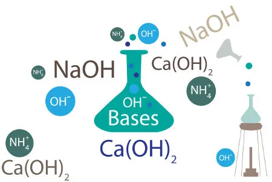

Bem-vindo ao Mundo da Química!
Intro
Conteúdos
Exercícios
Agora, vamos resolver algumas questões para que você consiga absorver o conteúdo da melhor forma. Responda às perguntas abaixo sobre os conceitos de Química que acabamos de estudar, com foco nas funções inorgânicas.

1. O que é um ácido? Dê um exemplo.
2. Qual é a diferença entre uma base e um ácido?
3. Cite 3 ácidos e suas funções.
4.As bases são responsavéis pela liberação de qual íon? Justifique sua resposta.
5.As bases podem estar presentes no nosso dia a dia tanto quanto os ácidos. Cite produtos do nosso dia a dia que possuem componentes básicos.
6.Do que os sais são formados?Faça um breve explicação sobre sais.
7.Explique como se dá o nível de solubilidade dos sais.
8.Oque diferencia os sais das bases?
9.O que são óxidos?Do que são formados?
10.Como são classificados os óxidos?
Enviar Respostas